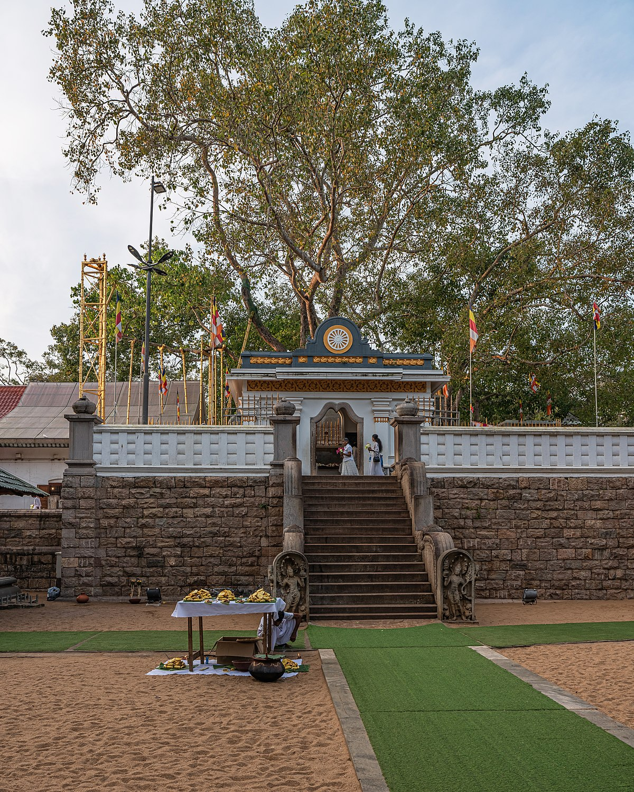
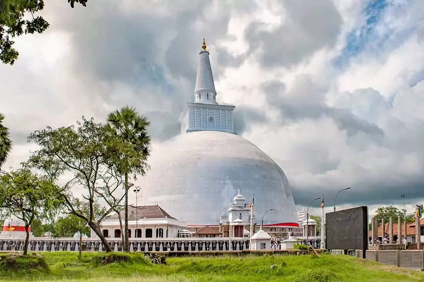
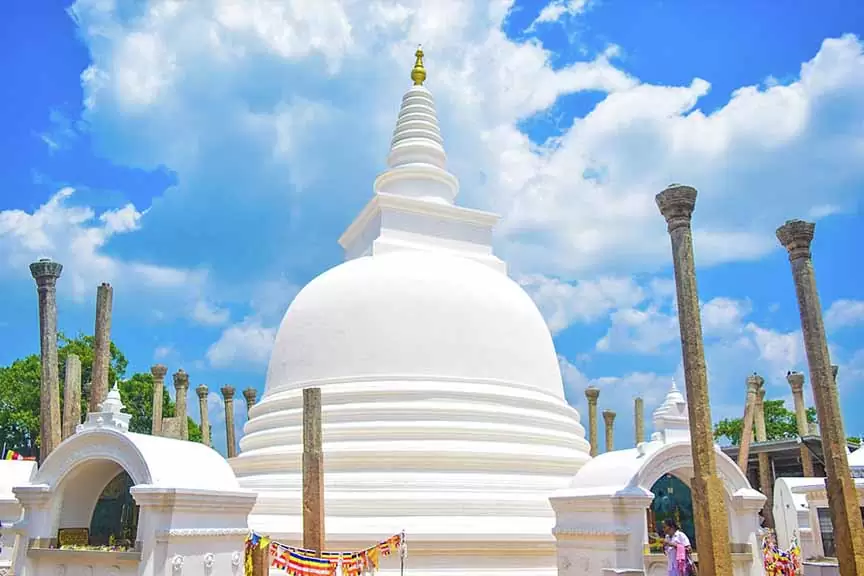
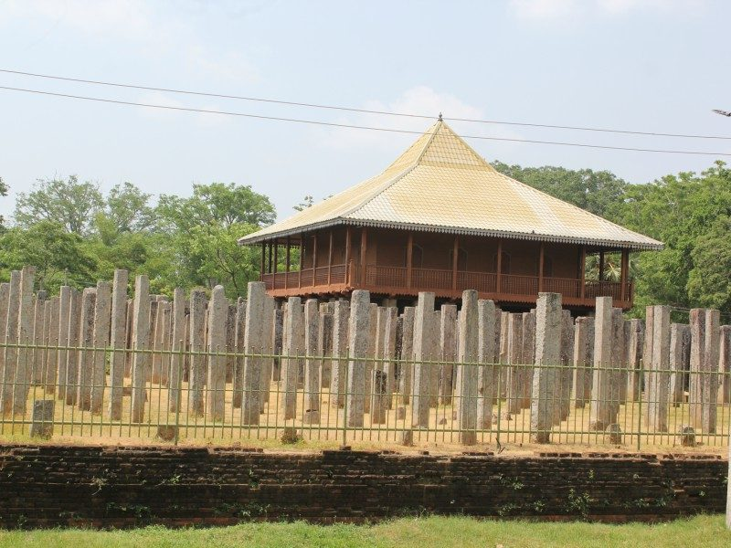
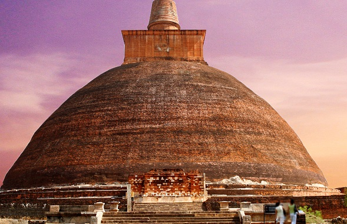
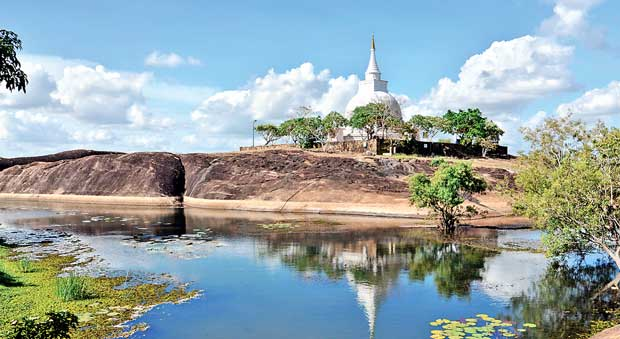
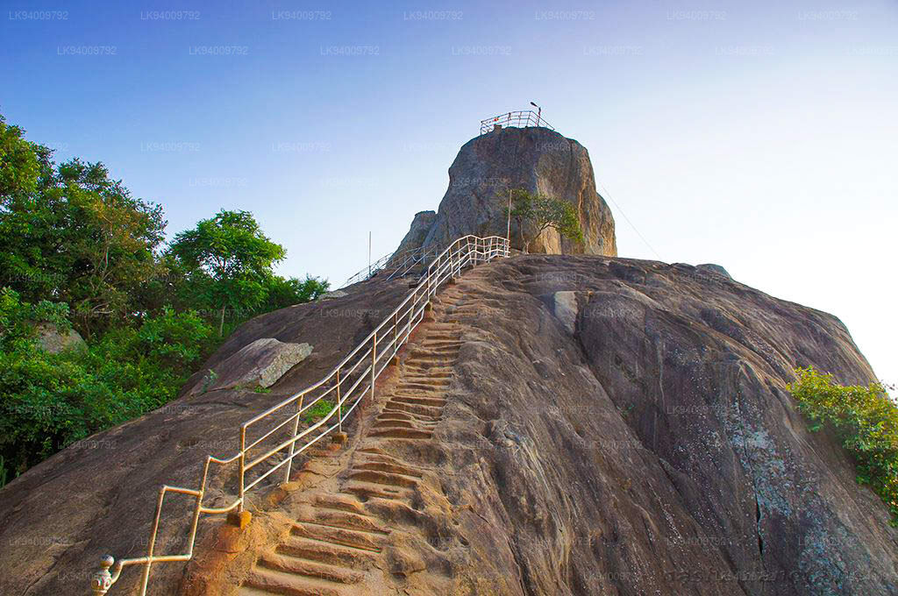

Adorned with dagobas (stupas), Anuradhapura is Sri Lanka's most evocative place to explore. Most of the ruins of Anuradhapura
remain as temples or holy places in today's time. This ancient city is home to not only temples but also pools and budget accommodation
places. Your trip to Anuradhapura for 2 days might turn into 4 or even 5 when you get along with the relaxed paced lifestyle of theirs.
Make sure that you cover the top places to visit in Anuradhapura as they will give you a glimpse of the history of this place. Although
the weather in Anuradhapura remains the same throughout the year, the best time to visit Anuradhapura has been recorded to be April and
September. During these months, the city receives less rainfall and it is a dry season which makes it perfect for sightseeing. So, if you
want to explore this place without any hassle then you know when to plan your trip.
1. Sri Maha Bodhi

Jaya Sri Maha Bodhi is among the most ancient trees in Sri Lanka that even today are thriving in the Mahamewna Gardens of Anuradhapura.
This special tree is said to have grown out of a cutting that was brought here from Bodh Gaya in India. It is believed that it has been
brought from the very same place where Gautama Buddha had attained enlightenment, thus making it one of the most popular places to visit
at Anuradhapura for pilgrims and spiritual souls. It was cared for by the ancient kings and queens of Sri Lanka, as well as many Buddhist
leaders. Flourishing even in the harshest of conditions, this tree is said to have such tranquil beauty that it instills a sense of calm
and peace in visitors.
2. Ruwanweli Maha Seya

Ruwanwelisaya Stupa is among the largest stupas (also called dagobas) in Sri Lanka and one of the most prominent places to visit in
Anuradhapura, Sri Lanka. Built long ago by King Dutugamunu, this beautiful stupa is nestled right in the heart of the heritage city of
Anuradhapura. Also called Maha Stupa, this adorned structure is over 338 feet tall and has large paved courts as well as platforms that
all add a unique architectural touch to this magnificent structure. Recent renovations have earned this shrine the privilege of being one
of the most revered sanctums of worship in Anuradhapura.
3. Thuparamaya

Thuparamaya, the oldest Stupa in Sri Lanka built after the introduction of Buddhism to Sri Lanka. The Thuparamaya, built by King
Devanapiyatissa, enshrines the sacred collar bone of the Buddha. This relic, a gift from India, stands testimony to the cordial
relations enjoyed by the then Sri Lanka ruler. The columns around the stupa were a part of the walkway that supported a roof which
covered the sacred edifice. Aesthetically, the interior of such a structure must have been the stunning expression of wood engineering
and of the most skilful craftsmanship. The edifice's conical design, unique in the architectural history of the world, continues to be
discussed and debated by scholars and scientists. The discovery of medical texts and surgical instruments dating back to the Anuradhapura
period confirm the Quality of life during that era. The tradition of using stone troughs as medicinal baths to cure the sick was in vogue
during the Anuradhapura and subsequent Polonnaruwa periods and before Buddhism was introduced to Sri Lanka. The patient, whether paralytic
or in a coma after a snake bite, was immersed in a bath enriched with the appropriate medicinal potions that would gradually be absorbed
into the body. Interestingly, the shape of the vessel was moulded to economize on the expensive fluid. The name Thuparamaya is a
residential complex for Bhikkhus.
4. Abhayagiri Dagoba
Leaving Anuradhapura without exploring any dagobas is like a sin that you might not want to commit. This colossal dagoba can be dated
back to the 1st century BC. The original height of Abhayagiri Dagoba was 100 meters owing to which it was one of the greatest structures
in the world then. After reconstruction and preservation of this place, the height has been restored to 75 meters. The name of this place
literally translates into the "Fearless Hill" or "Hill of Protection". You will find a slab with Buddha's footprint and some moonstones.
5. Lovamahapaya

Also called the Brazen Palace, Lovamahapaya is almost 2000 years old palace and was built by King Dutugemunu in the 2nd century B.C.
The most striking feature of this palace is its bronze tiles that add a dashing touch to the roof. The other prominent and attractive
features of this palace include the 1600 stone columns that are as tall as 150 feet and support 9 stories with about 1000 rooms. It was
initially used as a residence for Buddhist monks who would use it on the days of the “Poya” festival. And though it now lies in ruins,
this massive palace is still a testament of a bygone age that speaks volumes about its rich culture and heritage.
6. Jetavanaramaya

The monastery of Jetavanaramaya is one of the largest monasteries in Anuradhapura. In fact, it was once the third-tallest structure in the
whole world. The legend surrounding this ancient sanctum is that it's the same place where Buddha's sash or belt was tied and preserved for
a long time, and that is what fascinates worshippers and history geeks from around the world and brings them here in large numbers every year.
Luring in travelers with its enchanting historical significance, Jetavanaramaya still remains one of the largest holy structures in the world
and is home to about 10,000 monks.
7. Archaeological Museum
The Archaeological Museum Anuradhapura holds tremendous historical significance owing to the range of ancient artifacts, intricate carvings,
and age-old domestic items extracted after excavations in Anuradhapura and other parts of Sri Lanka it has on display. Established in 1947,
this museum is one of the best places to visit in Anuradhapura for history geeks and those who love the culture and heritage of Sri Lanka.
Some of the items on display here are as old as the pre-Christian era when Sri Lanka was home to the Sinhalese civilization. Other items to
see here are Buddha statues, inscriptions, paintings, drawings, coins, and Lankan antiques.
8. Wilpattu National Park
Wilpattu National Park is the largest park, located in the Northwest coast of Sri Lanka. What makes this park unique is the existence of
“Willus” ‐ natural lakes that have different degrees of salinity. The park was closed for 15 years, so that the wildlife had space and time
to recover to its former abundance, and was reopened in 2003. Now that it has been opened again, make sure that you explore it as it is one
of the best places to visit in Anuradhapura.
9. Padeniya Raja Maha Viharaya
This Viharaya is located in the North Western Province of Sri Lanka. There are many fascinating antiques in this place. Kurunegala city is
known to be the birthplace of many interesting legends in the world. The Buddhist temple has been preserved and maintained very well. Due to
this reason, there are more and more local as well as foreign travelers visiting this Viharaya. It was the royal capital of Sri Lanka in
ancient times. The temple was the home of a legendary giant, Therapuththabhaya who later on became a Buddhist monk. He was among the 10
giants of the army of Great King Dutugemunu.
10. Thanthirimale

One of the best places to visit in Anuradhapura, Sri Lanka, the old village of Thanthirimale or the Tantirimale is sought after by the
tourists, especially Buddhists who are seeking to explore the ancient Buddhist temples. Its location near the rocks makes this place sought
after amongst the tourists. Bescides the old village, Thanthirimale Stupa and Sri Maha Bodhi plant to Bo Tree et al are great places for
exploration as a tourist and a devoted Buddhist. So, how about trying one of the most unique places to visit in Anuradhapura.
11. Mihintale

All over the world, high places are given religious significance, with the result that devotees are always climbing steps.
Sometimes on their knees. Mihintale is one such place, its various shrines connected by a total of some 1,840 steps that ultimately
lead to the summit ‐ steep enough to require deep breaths and a meditative pace. They were built in the reign of Bhathika Abhaya
(22 BC‐AD 7), although a later paved road provides a short cut up to the first level.
12. Avukana Buddha Statue
The Buddha statue at Avukana also known as Avukana Pilimaya, is a remarkable rock carving of a standing Buddha. Located about 175 kms
away from Colombo in Avukana, near Kekirawa in the North Central Province of Sri Lanka, this statue is a masterpiece of man's artistry
and creative skill. Avukana was built during the reign of King Dhatusena in the 5th Century. Standing over 40 feet high, Avukana is the
tallest of the ancient Buddha statues in the country.